Colorblind-safe palettes: accessibility in data visualization
Source:vignettes/colorblind-safe.Rmd
colorblind-safe.RmdUnderstanding color vision deficiency
Color vision deficiency (CVD), commonly called “color blindness,” affects approximately 8% of males and 0.5% of females of Northern European descent. Understanding CVD types is essential for creating accessible visualizations.
Types of color vision deficiency
| Type | Affected population | Description |
|---|---|---|
| Deuteranomaly | ~6% of males, 0.4% of females | Reduced sensitivity to green light |
| Protanomaly | ~2% of males, 0.01% of females | Reduced sensitivity to red light |
| Tritanomaly | ~0.01% of population | Reduced sensitivity to blue light |
| Achromatopsia | Very rare | Complete color blindness (monochrome) |
The most common forms (deuteranomaly and protanomaly) affect red-green discrimination, which is why red-green color schemes are particularly problematic.
Gold standard palettes
koloRo includes extensively validated colorblind-safe palettes that have been rigorously tested and are recommended for scientific publications.
Okabe-Ito palette (2008)
The Okabe-Ito palette is considered the gold standard for colorblind-safe visualization. It was designed using confusion lines in color space to maximize distinguishability.
plot_palette("okabe_ito")Best for: General purpose categorical data, up to 8 categories.
Reference: Okabe & Ito (2008)
Wong palette (2011)
Published in Nature Methods, the Wong palette is optimized specifically for deuteranopia and protanopia.
plot_palette("wong")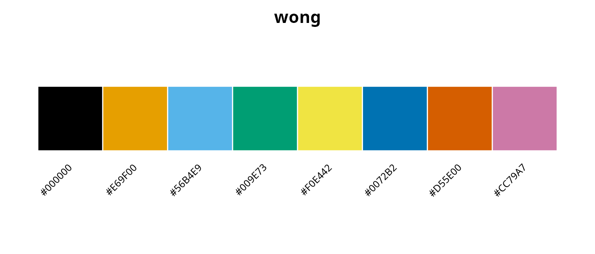
Best for: Scientific publications, particularly in biology and medicine.
Reference: Wong (2011)
Paul Tol collection (2021)
Paul Tol developed a comprehensive collection of palettes with mathematical optimization in CIELAB color space under simulated CVD conditions.
tol_palettes <- c(
"tol_bright",
"tol_high_contrast",
"tol_vibrant",
"tol_muted",
"tol_light",
"tol_medium"
)
plot_palette(tol_palettes)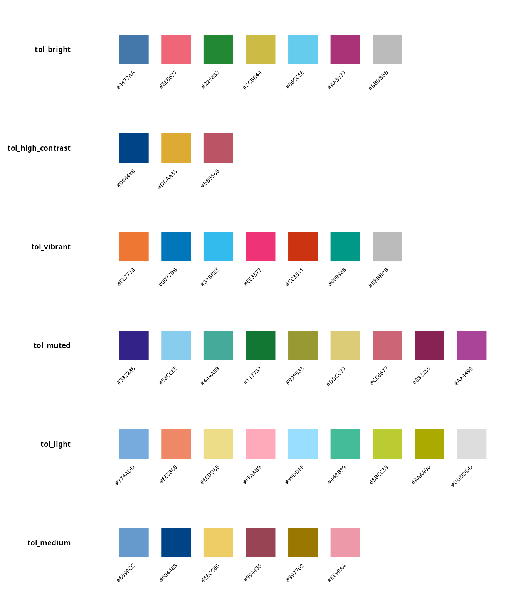
Palette descriptions:
The tol_bright palette provides 7 colors as the main qualitative scheme, while tol_high_contrast offers 3 colors optimized for maximum grayscale-safe contrast. For alternative bright applications, tol_vibrant provides 7 colors with a different hue selection. The tol_muted palette extends to 9 colors with a softer appearance suitable for larger datasets, whereas tol_light (9 colors) serves specialized purposes for cell backgrounds and tol_medium (6 colors) works well for color pairs.
Reference: Tol (2021)
IBM and Tableau palettes
Industry-standard colorblind-safe palettes:
plot_palette(c("ibm_colorblind", "tableau_colorblind10"))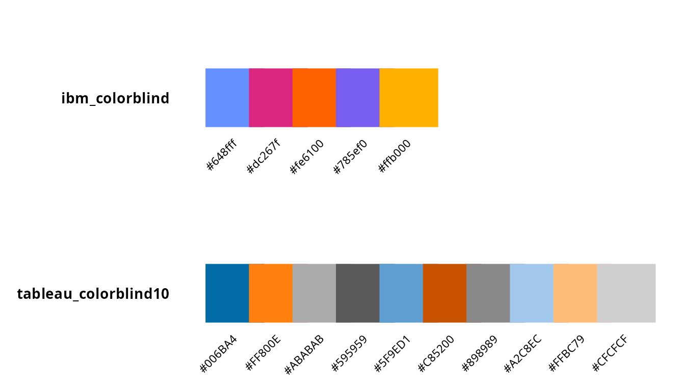
Color Universal Design (CUD) palettes
The CUD initiative provides carefully selected color pairs and sets:
# Safe two-color combinations
plot_palette(c("cud_sky_orange", "cud_blue_red", "cud_vermillion_blue"))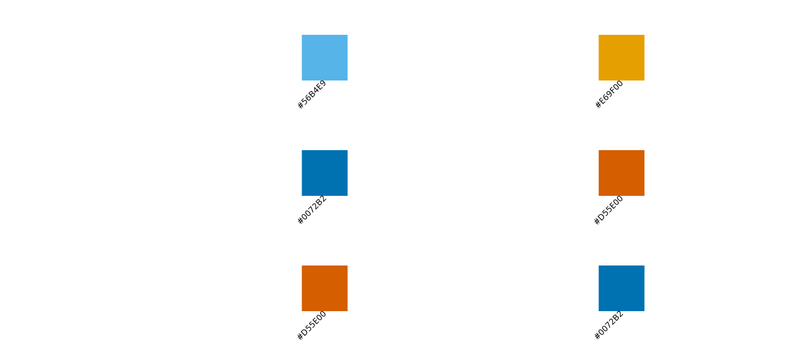
Type-specific optimized palettes
koloRo includes palettes optimized for specific types of color vision deficiency:
plot_palette(c("deuteranopia_safe", "protanopia_safe", "tritanopia_safe"))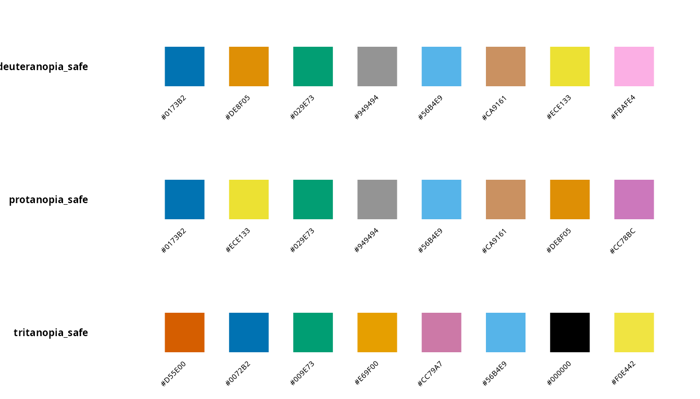
Safe diverging palettes
Diverging palettes for data with a meaningful midpoint:
plot_palette(c("safe_diverging_brown_teal", "safe_diverging_purple_green", "safe_diverging_pink_green"))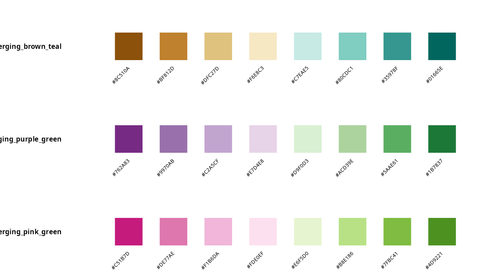
Complete colorblind palette inventory
cb_list <- list_palettes(category = "colorblind")
knitr::kable(cb_list[1:20, ], caption = "Colorblind-safe palettes (first 20)")| palette_name | category | n_colors |
|---|---|---|
| okabe_ito | colorblind | 8 |
| okabe_ito_extended | colorblind | 10 |
| wong | colorblind | 8 |
| tol_bright | colorblind | 7 |
| tol_high_contrast | colorblind | 3 |
| tol_vibrant | colorblind | 7 |
| tol_muted | colorblind | 9 |
| tol_light | colorblind | 9 |
| tol_medium | colorblind | 6 |
| tol_pale | colorblind | 6 |
| tol_dark | colorblind | 6 |
| ibm_colorblind | colorblind | 5 |
| ibm_colorblind_extended | colorblind | 7 |
| tableau_colorblind10 | colorblind | 10 |
| cud_sky_orange | colorblind | 2 |
| cud_blue_red | colorblind | 2 |
| cud_vermillion_blue | colorblind | 2 |
| cud_bluish_green_red | colorblind | 2 |
| safe_qualitative_4 | colorblind | 4 |
| safe_qualitative_5 | colorblind | 5 |
Best practices for accessible visualizations
1. Start with validated palettes
Always begin with one of the gold standard palettes (Okabe-Ito, Wong, or Paul Tol):
# Recommended starting points
recommended <- c("okabe_ito", "wong", "tol_bright")
plot_palette(recommended)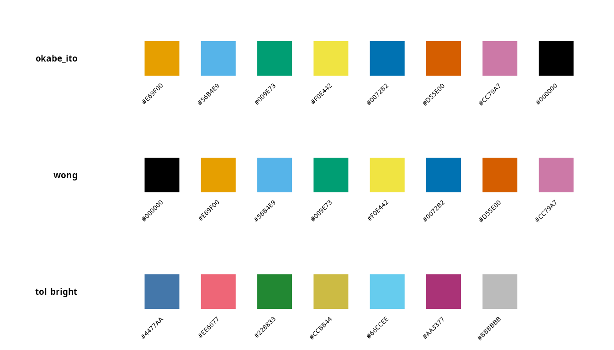
2. Limit the number of colors
Even with colorblind-safe palettes, too many colors reduce distinguishability. The optimal range is 5-7 distinct colors for most visualizations, with a maximum of 10-12 colors used with caution. When additional categories are needed beyond this limit, consider using shapes or patterns rather than introducing more colors.
3. Use luminance contrast
Ensure colors have different brightness levels, not just different hues:
# Paul Tol's high contrast palette
# Specifically designed for grayscale conversion
plot_palette("tol_high_contrast")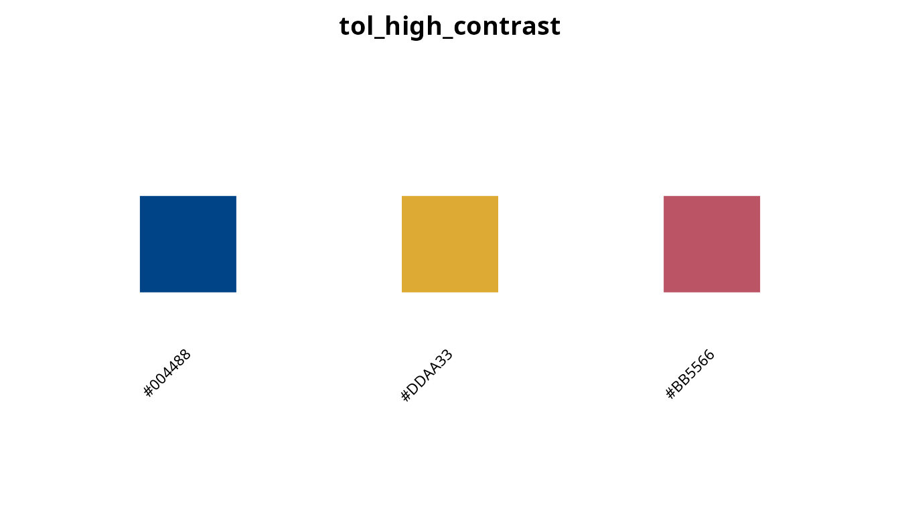
4. Avoid problematic color pairs
Never rely solely on problematic color combinations such as red versus green, blue versus purple, or green versus brown. These pairs are difficult or impossible to distinguish for individuals with common forms of color vision deficiency.
# Safe two-color combinations
safe_pairs <- c("cud_sky_orange", "cud_blue_red")
plot_palette(safe_pairs)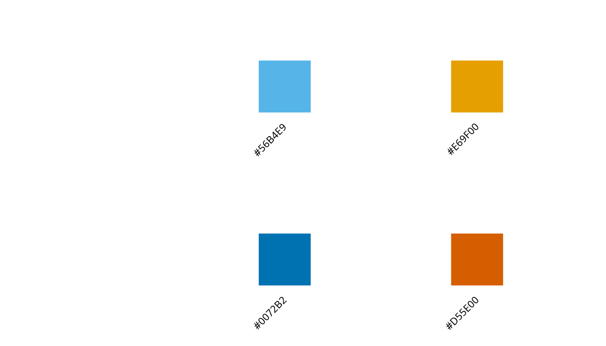
Choosing the right palette
For categorical data (qualitative)
# Up to 5 categories
plot_palette("tol_high_contrast") # Maximum contrast
# Up to 8 categories
plot_palette("okabe_ito") # Gold standard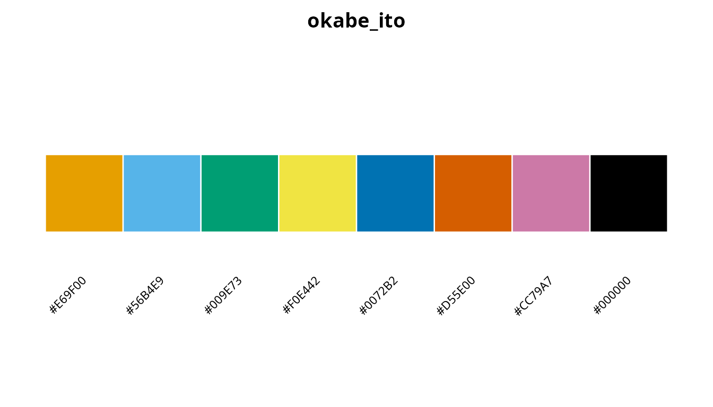
# Up to 9 categories
plot_palette("tol_muted") # More colors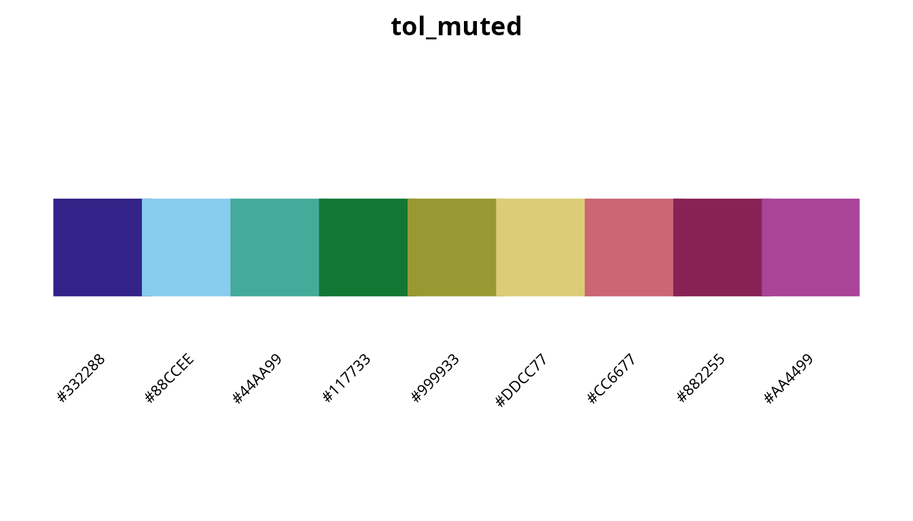
For sequential data
Use perceptually uniform palettes that work in grayscale:
plot_palette("cividis") # Specifically optimized for deuteranopia
Using colorblind-safe palettes with ggplot2
library(ggplot2)
# Discrete scale
ggplot(mtcars, aes(x = wt, y = mpg, color = factor(cyl))) +
geom_point(size = 3) +
scale_color_koloro("okabe_ito") +
theme_minimal()
# Continuous scale (colorblind-optimized)
ggplot(mtcars, aes(x = wt, y = mpg, color = hp)) +
geom_point(size = 3) +
scale_color_koloro_c("cividis") +
theme_minimal()Summary recommendations
| Situation | Recommended palette |
|---|---|
| General purpose (≤8 categories) |
okabe_ito or wong
|
| Scientific publication |
okabe_ito or tol_bright
|
| Maximum contrast (≤3 categories) | tol_high_contrast |
| Many categories (≤9) | tol_muted |
| Sequential data |
cividis or viridis
|
| Diverging data | safe_diverging_brown_teal |
| Traffic light alternative | traffic_safe |
References
Okabe, M., & Ito, K. (2008). Color Universal Design (CUD): How to make figures and presentations that are friendly to colorblind people. JFly*. https://jfly.uni-koeln.de/color/
Wong, B. (2011). Points of view: Color blindness. Nature Methods, 8(6), 441. doi:10.1038/nmeth.1618
Tol, P. (2021). Colour schemes. SRON Technical Note SRON/EPS/TN/09-002. https://personal.sron.nl/~pault/
Crameri, F., Shephard, G.E., & Heron, P.J. (2020). The misuse of colour in science communication. Nature Communications, 11, 5444. doi:10.1038/s41467-020-19160-7
Brewer, C.A. (2013). ColorBrewer 2.0: Color advice for cartography. https://colorbrewer2.org/
Nuñez, J.R., Anderton, C.R., & Renslow, R.S. (2018). Optimizing colormaps with consideration for color vision deficiency. PLOS ONE, 13(7), e0199239. doi:10.1371/journal.pone.0199239
Session info
sessionInfo()
#> R version 4.6.0 (2026-04-24)
#> Platform: x86_64-pc-linux-gnu
#> Running under: Ubuntu 24.04.4 LTS
#>
#> Matrix products: default
#> BLAS: /usr/lib/x86_64-linux-gnu/openblas-pthread/libblas.so.3
#> LAPACK: /usr/lib/x86_64-linux-gnu/openblas-pthread/libopenblasp-r0.3.26.so; LAPACK version 3.12.0
#>
#> locale:
#> [1] LC_CTYPE=es_ES.UTF-8 LC_NUMERIC=C
#> [3] LC_TIME=es_ES.UTF-8 LC_COLLATE=es_ES.UTF-8
#> [5] LC_MONETARY=es_ES.UTF-8 LC_MESSAGES=es_ES.UTF-8
#> [7] LC_PAPER=es_ES.UTF-8 LC_NAME=C
#> [9] LC_ADDRESS=C LC_TELEPHONE=C
#> [11] LC_MEASUREMENT=es_ES.UTF-8 LC_IDENTIFICATION=C
#>
#> time zone: Europe/Madrid
#> tzcode source: system (glibc)
#>
#> attached base packages:
#> [1] stats graphics grDevices utils datasets methods base
#>
#> other attached packages:
#> [1] koloRo_0.1.2
#>
#> loaded via a namespace (and not attached):
#> [1] digest_0.6.39 desc_1.4.3 R6_2.6.1 fastmap_1.2.0
#> [5] xfun_0.57 cachem_1.1.0 knitr_1.51 htmltools_0.5.9
#> [9] rmarkdown_2.31 lifecycle_1.0.5 cli_3.6.6 sass_0.4.10
#> [13] pkgdown_2.2.0 textshaping_1.0.5 jquerylib_0.1.4 systemfonts_1.3.2
#> [17] compiler_4.6.0 rstudioapi_0.18.0 tools_4.6.0 ragg_1.5.2
#> [21] bslib_0.10.0 evaluate_1.0.5 yaml_2.3.12 otel_0.2.0
#> [25] jsonlite_2.0.0 htmlwidgets_1.6.4 rlang_1.2.0 fs_2.1.0